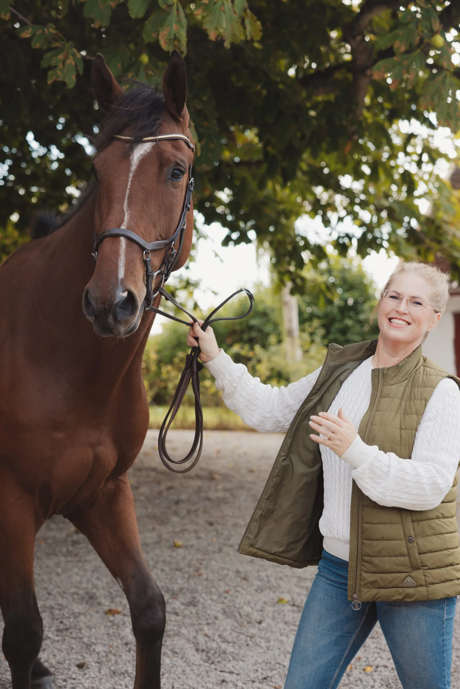
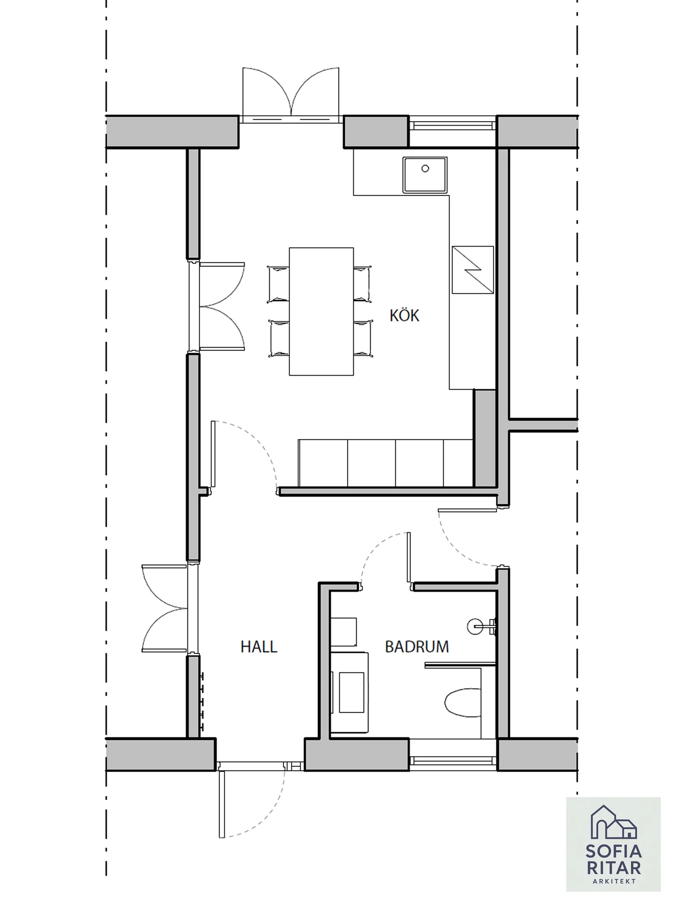

Arkitektur med
människan i mitten.
Sofia Holm · Arkitekt SAR/MSA

Hej, jag är Sofia.
Jag ritar för livet som händer mellan väggarna.
Med över tio år som arkitekt arbetar jag med villor, ombyggnader, lantliga fastigheter och hästanläggningar. Basen finns i Skåne, men jag tar även uppdrag runt om i Sverige.
Jag tycker om att hitta det som gör en plats speciell. Ett äldre hus kan behöva ett nytt kapitel, en familj en bättre planlösning och en gård tydligare flöden. Målet är en helhet där form och funktion hjälper varandra.
Jag tar emot ett begränsat antal projekt för att kunna arbeta nära varje kund.
Berätta om dina planerFrån första tanke
till genomtänkt helhet.
Vi lär känna platsen
Ett samtal om vardagen, önskemålen och fastighetens möjligheter. Vi ringar in vad uppdraget ska omfatta.
Idéerna tar form
Skisser, planlösningar och materialval växer fram i dialog. Vi prövar alternativen innan besluten låses.
Vi tar nästa steg
Bygglov, bygghandlingar och samordning anpassas till projektet. Jag kan följa med i dialogen med kommunen och dem som bygger.
Det börjar med en idé.
Och en omtänksam skiss.
Hur ska det kännas att komma hem? Var faller morgonljuset? Och hur får vi vardagen att flyta?
Jag hjälper dig att se möjligheterna – från de första tankarna till ritningar, bygglov och dialogen med dem som bygger.
Så arbetar jag
Arkitekt.
Och hästmänniska.
Min erfarenhet av hästar började långt före ritbordet. Jag har gått Hippologigymnasiet, tävlat i fälttävlan och arbetat som både ridinstruktör och hästskötare.
Den bakgrunden följer med in i arbetet med stall, ridhus och gårdar. Jag vet hur stor skillnad det kan göra när placering, arbetsytor och dagliga rutiner verkligen fungerar tillsammans.
Upptäck mina hästprojekt